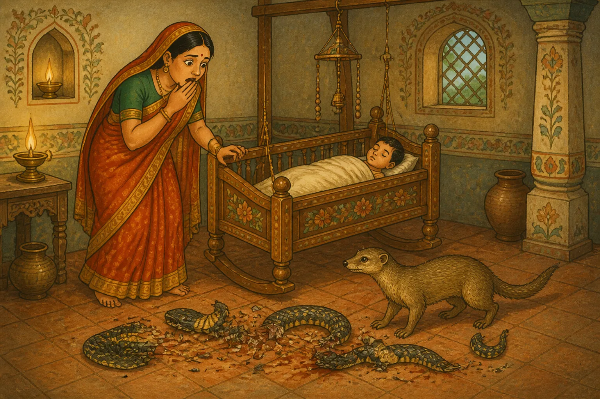

Dev Sharma was a Brahmin who used to live with his wife in a certain town. One day, his wife gave birth to a son and they were very happy.
On the very same day, a female mongoose gave birth to a baby mongoose very near his house. As destiny would have it, the mother mongoose died soon after the birth.
When they observed this, they took pity on him and the Brahmin's wife adopted the little mongoose and started looking after him as his own son.
She served her own breast milk to both her own son and the little mongoose, bathed them together and put oil on them together. She was a fond mother for both of them. Both her son and the mongoose were very fond of each other, and spent all the time together.
However, she was not a fool and knowing that the mongoose was an animal in reality, she always kept a guard, "He is a mongoose and will soon develop the animal instincts that he has inherited from his species. Some day, he may harm my own son. I shall always keep a watch on him."
One day, she had to fetch some water. So, she put her son to bed, and while going outside with the pitcher, asked her husband to keep a watch. She said, "I am going to the well to fetch some water. Please look after our son and make sure the mongoose does not hurt him by mistake."
The Brahmin was careless. Without informing his wife, he got prepared and went to beg for alms leaving the little mongoose and their son alone by themselves.
As it happened, during the very time they were alone, a poisonous snake entered the house through a hold and started approaching the Brahmin's son.
When the mongoose saw this, he attacked his natural enemy to defend the child, who was like a brother to him. Although he was small and the snake was strong, he fought with all might and bit the snake into pieces and eventually killed the snake. His mouth and claws were all smeared with the snake's blood.
The little mongoose was very proud of itself; and waited outside the house for the Brahmin's wife. He was eager to show his mother how brave he was.
Knowing her husband's carelessness, the Brahmin's wife was tensed and was returning in a hurry when she saw the little mongoose coming towards her. She noticed that he was covered in blood, and without thinking, jumped to the conclusion that the mongoose must have attacked her son.
Angered and frustrated, she threw the heavy pitcher - full of water, that she was carrying on the little mongoose. The little mongoose was severely wounded.
She ran inside, and she was amazed to see her son safely sleeping in his cradle. She then saw the snake near the cradle that had been torn into shreds.

At once she realized what had happened. She was heart-broken with the thought of having hurt the little mongoose, who was like a son to her.
Not knowing who to blame, when her husband returned home, she explained, and they were both very sorry for the suffering of their second son. The wise indeed say:Think hard and do not do anything in haste.
« The Dog who went Abroad
The Four Treasure-Seekers »